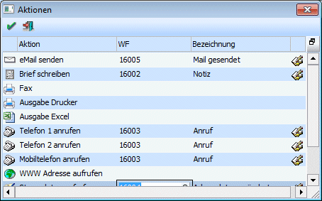

In gewissen Programmbereichen wie z.B. dem Namen suchen oder in den Kampagnen können vordefinierte Aktionen wie Mails versenden, Briefe schreiben und dergleichen mehr abgerufen werden. Damit diese Aktionen auch protokolliert werden, können den einzelnen Aktionen s genannte Aktionsschritte bzw. Workflow-Startschritte hinterlegt werden. Diese Definition findet über den Menüpunkt
1 Parameter
1 Aktionen
statt.

In der Tabelle werden alle Aktionen angezeigt, die im Programm verfügbar sind - das sind fix hinterlegt Aktionen, die nicht verändert werden können.
Im Feld "WF" kann nun die auszuführende Aktion (der ehemalige Historienschritt) bzw. der Startpunkt eines Workflows hinterlegt werden. Durch Drücken der F9-Taste kann nach allen angelegten Startpunkten und Aktionen (Historienschritte) gesucht werden.
Wurde ein entsprechender Eintrag gefunden, so wird die Nummer des Startpunktes bzw. der Aktion (des Historienschrittes) in die Tabelle übernommen. Im Feld "Bezeichnung" wird dann der Name des Startpunktes/Aktionsschrittes angezeigt, in der nächsten Spalte wird dann auch noch ein Symbol dargestellt, anhand dessen man sehen kann, ob es sich um eine Aktion () oder um eine Startpunkt () handelt.
Buttons
 OK
OK
Durch Drücken des OK-Buttons werden die Ändungerungen in diesem Fenster (z.B. Hinteregung der Workflows oder Aktionsschritte) gespeichert.
 Ende
Ende
Durch Drücken der ESC-Taste oder Anklicken des Ende-Buttons wird das Fenster geschlossen.